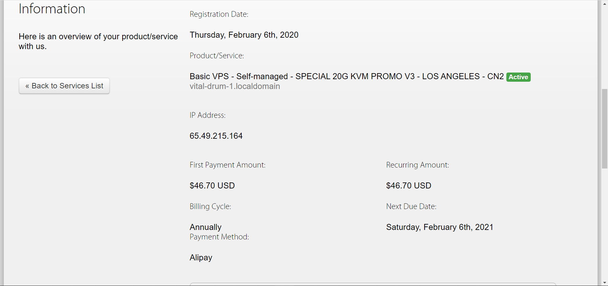
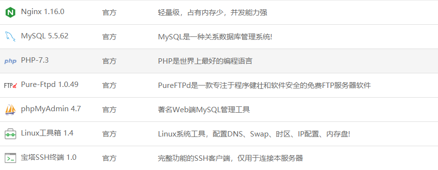
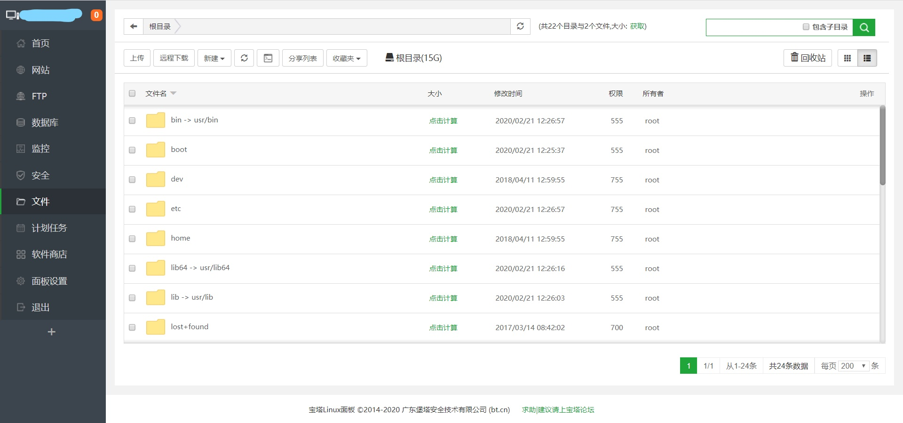

可能是因为最近疫情的原因，之前用Vultr搭的梯子被墙了。。正好，Vultr那边的余额也不是很够了，但是最近还要打美赛，亟需翻墙。于是本人咬了咬牙，狠下心来，从自己本就不多的压岁钱中抽出了一大部分购买了一个长达一年的搬瓦工VPS，并打算用这个VPS重新搭一个梯子。

本人是一墙外小白，因此直到一个星期前，我才发现居然还有v2ray这种富强操作！然后，喜欢折腾的我便花了整整两天去查看各种YouTube上的教程。
因为VPS性能不差，我打算采取v2ray+blog的方式去榨干我的服务器性能，首先带来的便是v2ray的搭建部分。
第一部分、v2ray的搭建
因为也没打算当教程写，我这儿步骤就写得稍微简单一点吧。
首先我为自己的服务器安装了CentOS 7系统。然后在宝塔网站成功地找到了安装宝塔系统的方法。为什么要安装宝塔系统呢？当然是为了更好地对服务器以及服务器上搭起的网站更加系统化地管理啦！
$ yum install -y wget && wget -O install.sh http://download.bt.cn/install/install_6.0.sh && sh install.sh
大概等2分钟左右安装完成，然后进入宝塔面板进行MySQL+php+Nginx等的安装。

- 利用宝塔面板对域名进行SSL证书的签发。
回到服务器命令行那儿，输入以下指令安装v2ray
$ bash <(curl -s -L https://git.io/v2ray.sh)接下来便是一步步地设置端口啦之类的。但安装过程中有一点是需要注意的，因为我们的Nginx已经用宝塔安装好了，所以当进行到是否自动安装时一定一定要选否！！
现在v2ray的服务器端应该已经部署完成了，但因为Nginx的端口和v2ray不同，我们需要在（宝塔面板 –> 网站 –> 站点修改）中的配置文件的末尾加上以下指令
location / { proxy_redirect off; proxy_pass http://127.0.0.1:ababa; #ababa处为你的端口号 proxy_http_version 1.1; proxy_set_header Upgrade $http_upgrade; proxy_set_header Connection "upgrade"; proxy_set_header Host $http_host; }
灯等登凳！~~这会儿v2ray应该就可以用啦。利用以下代码生成v2ray URL
$ v2ray url
第二部分、基于Hexo的blog搭建
事实上呢，在最开始的时候，我是打算用Hexo搭建，后来又打算用wordpress搭建。然后，我也不知道怎么想的，迷迷 糊糊地又用回了Hexo搭建，我想，可能是因为Hexo的主题更和我胃口吧（笑cry。
其实本质上，我并没有在我的VPS上面用到Hexo。我选择的是先在自己电脑上搭建静态网站，然后再把网站上传到VPS上。
- 第一步首先要做的是node.js的安装，这个可以在node.js的官网上找到相应OS版本的安装方式引导。
接着是cnpm（淘宝npm的镜像啦）的安装（符合中国国情哈哈）
$ npm install -g cnpm --registry=https://registry.npm.taobao.org
然后安装Hexo
$ npm install -g hexo-cli
接下来创建一个本地的网址文件夹，把它初始化
$ hexo init .
我选择了一个比较符合我胃口的主题（这里感谢Fluid-dev开发维护的的Fluid主题），然后一顿操作
$ git clone https://github.com/fluid-dev/hexo-theme-fluid.git themes/fluid
- 把_config.yml中的theme改成fluid（也就是我这儿的主题文件夹名）
然后操作一下
$ hexo clean $ hexo deploy $ hexo g $ hexo s
- 大功告成！我们可以在http://localhost:4000/ 这个网站看我们网站的示例啦！
最后一步，把public文件夹内所有文件扔到服务器的网页文件夹下。搞定啦！部署成功！

本博客所有文章除特别声明外，均采用 CC BY-SA 3.0协议 。转载请注明出处！